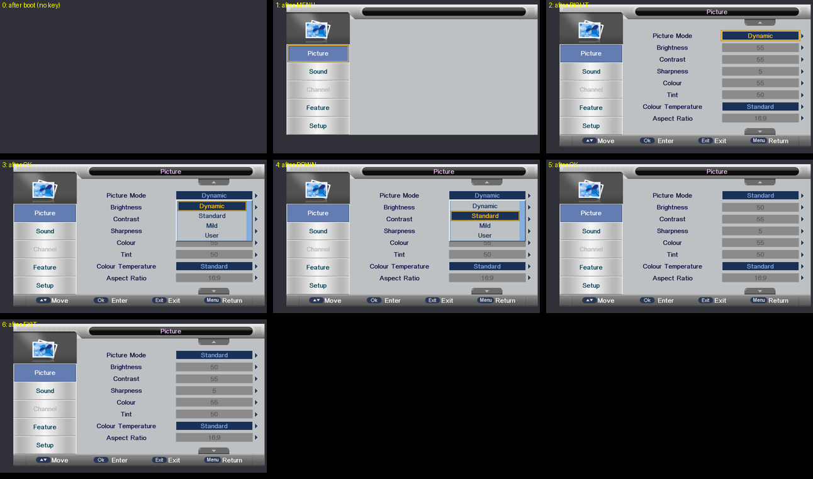
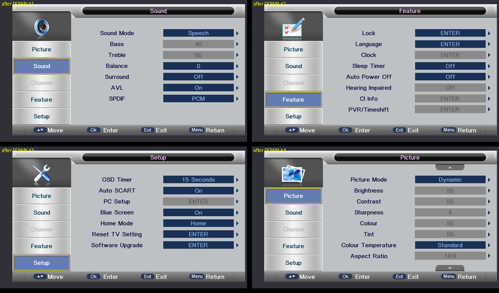
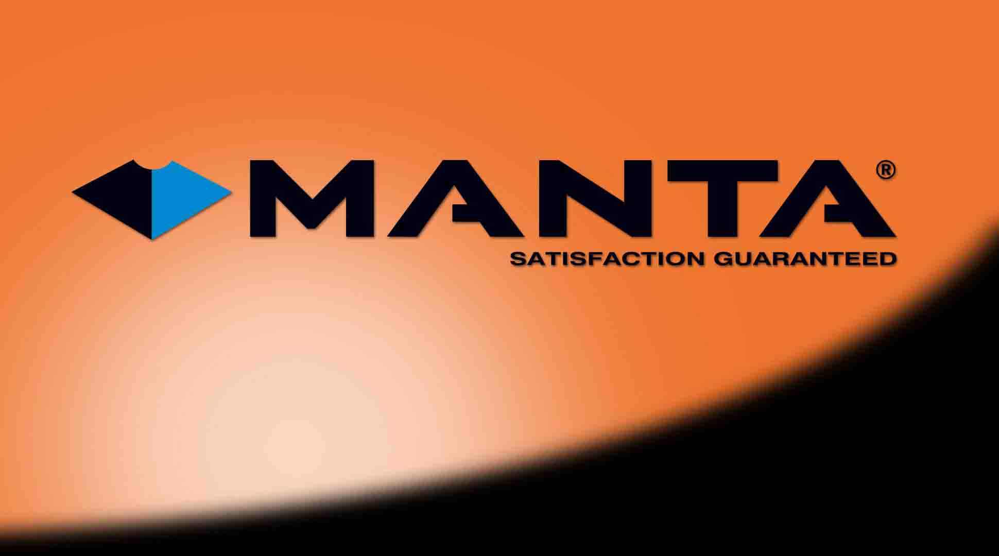
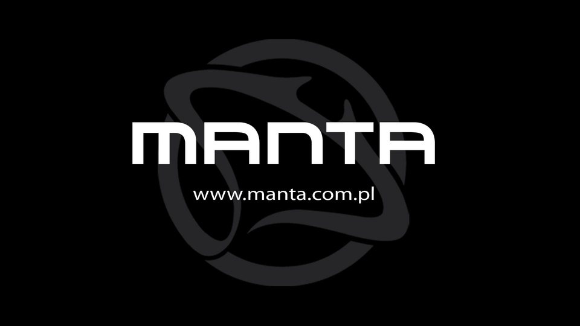
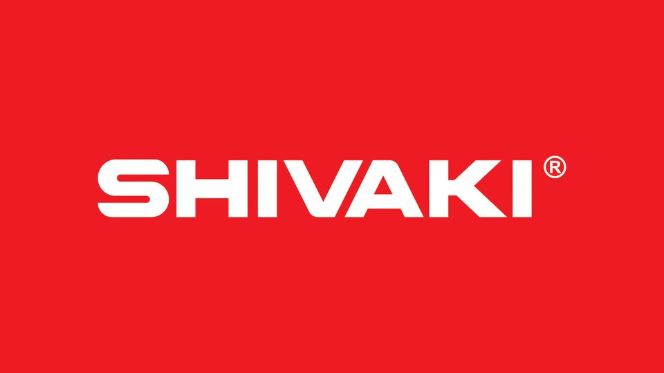
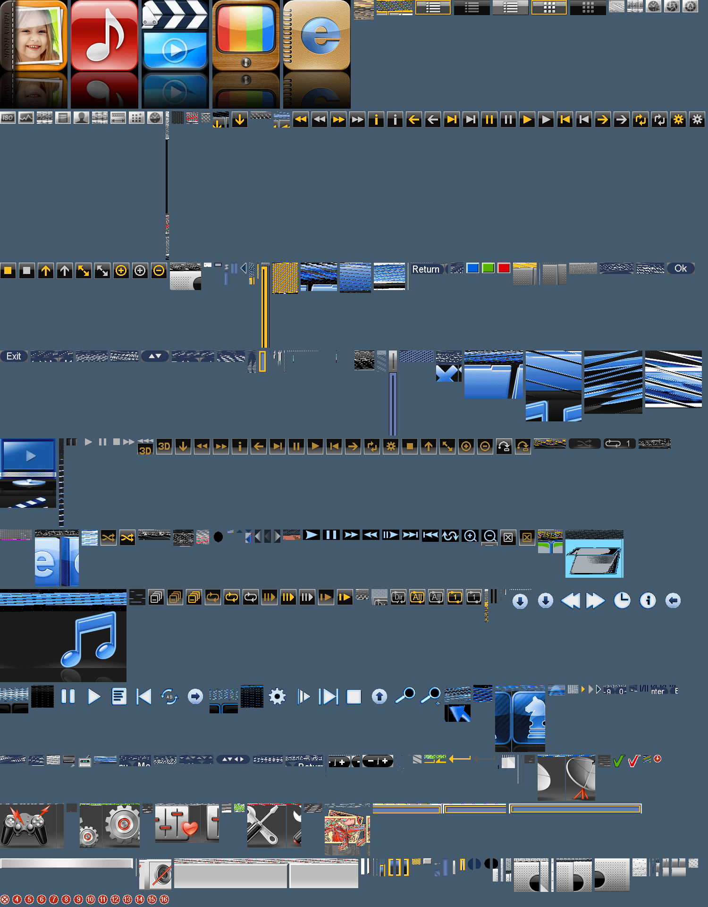

Try it
Press keys on the remote
The Live firmware tab runs the original MStar firmware in your browser. The Sunplus and MStar tabs play back screens recorded by an automatic explorer: each key follows a transition the emulator actually made, and keys with a blue ring were pressed from the current screen.
Boot walkthrough
From reset vector to menu
Step through each platform's boot stage by stage. Plain lines are the firmware's own UART output. Lines in [brackets] are emulator annotations. Timing is compressed.
How it works
The firmware does the drawing. The emulator stays honest.
The emulator runs the firmware's own instructions and models the hardware those instructions talk to. A pixel can only reach the screen if the firmware asked the graphics hardware to put it there.
strict
Hardware behaviour that is not known stays unknown. The emulator returns no made-up register values, and the strict replay of 6,592,741 events must stay identical across changes.
exploratory
To get past a gap, a hypothesis can be switched on as an opt-in flag. It is labelled in the output and kept apart from verified results.
evidence
Each finding is written up in docs/ and evidence/, with checksums and save states that can be reproduced.
Platforms
Two very different TVs
Both sets are sold under the Manta brand, but inside they share almost nothing.
| MStar MSD309 (Titania4) | Sunplus SPHE8600 | |
|---|---|---|
| Sets | Manta LCD4214 | Manta LED4202, Shivaki STV-24LED14 (CV9202 boards) |
| Main CPU | MIPS, plus 8051 PM and AVD MCUs and an OpenRISC TSP core | MIPS32 24KEc with the DSP ASE, single core |
| Software | MStar bare-metal runtime with the ZUI window/message toolkit | eCos with DirectFB 1.1.0 and the "SUNPLUS GPU 1.0" driver |
| Graphics | GE (fill, BitBlt, stretch, keyed blend) into GOP windows | GPU command FIFO (fill, blit, stretch, colour key) into 8-bpp CLUT OSD regions |
| Furthest point | NO SIGNAL dialog, all main menus, factory, hotel and lock menus, USB player | Full main menu with all tabs, lists, value changes, languages and the source list |
Sunplus SPHE8600
The second platform
The Sunplus image is an eCos kernel and a compressed application. Getting its menu on screen took a model of the GPU command FIFO, which is a 0x8000-byte ring with a lap bit, and the 8-bit CLUT palette in RAM. Keys go in through the firmware's own UI event queue.


Key events
These event IDs were found by probing the LED4202 image and are posted to the firmware's UI queue. The hardware IR path is not modelled yet.
0x10210x10180x10190x101a0x101b0x101c0x10430x10470x101f0x10200x1017Why was the menu in Russian at first?
The language comes from the country stored in the flash dump's saved settings. That dump came from a set configured for Russia. Pointing a settings-only copy of the flash at another country gives the English menu, and the firmware's own language setting switches it live, to Polish for example.
Boot logos of all three sets, and the OSD bitmap atlas



The application image holds a table of 632 24-byte descriptors (data pointer, palette pointer, size, 8 bpp). This is the decoded contact sheet. A few entries still decode as noise because they use a different stride or format.

Gallery
Captured screens
Click any frame to enlarge it. Use ← → to browse and Esc to close. For every screen the automatic explorer reached, with the key path to each one, see Every screen.
Status
What works and what doesn't
| Platform | Works | Not yet |
|---|---|---|
| MStar MSD309 |
|
|
| Sunplus SPHE8600 |
|
|
Get it
Run it yourself
Windows builds are on the Releases page. The repository includes the firmware images used for testing, with hashes and a rights notice in firmware/README.md.
Clone
Source, docs, evidence and regression suites.
git clone https://github.com/vthreex/manta-emulator
Sunplus menu viewer
Opens a window and drives the menu from your keyboard.
python tools/sunplus/menu_viewer.py --runner sunplus_run.exe --kernel KERNEL --flash FLASH
FAQ
Is this a full TV emulator? Can I watch TV with it?
No. It runs the TV's software far enough that the menus and dialogs work. There is no tuner or video decoder model, so there is no broadcast picture.
Why not just recreate the menus in code?
That would be a mockup, not an emulator. The point is to show what the original firmware does. Any frame here is the firmware's own output, or it is clearly labelled when a hypothesis was needed to get there.
Why does the Sunplus TV boot so much faster?
It has a single MIPS core, and its boot polls far less unmodelled hardware. The MStar boot also runs the PM51, AVD and TSP side cores next to the MIPS core, and it polls many more peripherals on the way to its UI.
Who built it?
The project was directed, tested and published by v3x, and built together with AI coding assistants. OpenAI Codex did the first reverse-engineering phase. Claude (Anthropic, through Claude Code) did the work after that, and those commits carry a Co-Authored-By trailer.